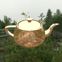

My OpenGL Projects
I have included a few of my OpenGL projects which I have ported to WebGL.
The original source code is written in C++; it can be found through this link: https://github.com/colintan95/OpenGL-Projects.git
01 - LightingImplementation of Phong Reflection Model, with Blinn-Phong Shading Model |
|
02 - Particle SystemSimple particle system |
|
03 - Shadow MappingImplementation of shadow mapping |
|
04 - Sine WaveA textured sine wave with lighting and shadows |
|
05 - Projective Texture MappingTexture projected onto the scene |
|
|  |
06 - Environment MappingEnvironment Mapping using Cubemap |